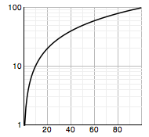

Class pv.Scale.log
Represents a log scale.  Most commonly, a log scale represents a 1-dimensional log transformation from a numeric domain of input data [d0, d1] to a numeric range of pixels [r0, r1]. The equation for such a scale is:
f(x) = (log(x) - log(d0)) / (log(d1) - log(d0)) * (r1 - r0) + r0where log(x) represents the zero-symmetric logarthim of x using the scale's associated base (default: 10, see pv.logSymmetric). For example, a log scale from the domain [1, 100] to range [0, 640]:
f(x) = (log(x) - log(1)) / (log(100) - log(1)) * (640 - 0) + 0Thus, saying
f(x) = log(x) / 2 * 640
f(x) = log(x) * 320
.height(function(d) Math.log(d) * 138.974)is equivalent to
.height(pv.Scale.log(1, 100).range(0, 640))As you can see, scales do not always make code smaller, but they should make code more explicit and easier to maintain. In addition to readability, scales offer several useful features:
1. The range can be expressed in colors, rather than pixels. Changing the example above to
.fillStyle(pv.Scale.log(1, 100).range("red", "green"))
will cause it to fill the marks "red" on an input value of 1, "green" on an
input value of 100, and some color in-between for intermediate values.
2. The domain and range can be subdivided for a "poly-log" transformation. For example, you may want a diverging color scale that is increasingly red for small values, and increasingly green for large values:
.fillStyle(pv.Scale.log(1, 10, 100).range("red", "white", "green"))
The domain can be specified as a series of n monotonically-increasing
values; the range must also be specified as n values, resulting in
n - 1 contiguous log scales.
3. Log scales can be inverted for interaction. The #invert method takes a value in the output range, and returns the corresponding value in the input domain. This is frequently used to convert the mouse location (see pv.Mark#mouse) to a value in the input domain. Note that inversion is only supported for numeric ranges, and not colors.
4. A scale can be queried for reasonable "tick" values. The #ticks method provides a convenient way to get a series of evenly-spaced rounded values in the input domain. Frequently these are used in conjunction with pv.Rule to display tick marks or grid lines.
5. A scale can be "niced" to extend the domain to suitable rounded
numbers. If the minimum and maximum of the domain are messy because they are
derived from data, you can use #nice to round these values down and
up to even numbers.
Defined in: LogScale.js.
| Constructor Attributes | Constructor Name and Description |
|---|---|
|
Returns a log scale for the specified domain.
|
| Method Attributes | Method Name and Description |
|---|---|
|
base(v)
Sets or gets the logarithm base.
|
|
|
by(f)
Returns a view of this scale by the specified accessor function f.
|
|
|
domain()
Sets or gets the input domain.
|
|
|
invert()
Sets or gets the output range.
|
|
|
nice()
"Nices" this scale, extending the bounds of the input domain to
evenly-rounded values.
|
|
|
range()
|
|
|
tickFormat(t)
Formats the specified tick value using the appropriate precision, assuming
base 10.
|
|
|
ticks()
Returns an array of evenly-spaced, suitably-rounded values in the input
domain.
|
- Parameters:
- {number...} domain...
- domain values.
- Returns:
- {pv.Scale.log} a log scale.
- Parameters:
- {number} v Optional
- the new base.
- Returns:
- {pv.Scale.log} this, or the current base.
This method is provided for convenience, such that scales can be succinctly defined inline. For example, given an array of data elements that have a score attribute with the domain [0, 1], the height property could be specified as:
.height(pv.Scale.log().range(0, 480).by(function(d) d.score))This is equivalent to:
.height(function(d) d.score * 480)This method should be used judiciously; it is typically more clear to invoke the scale directly, passing in the value to be scaled.
- Parameters:
- {function} f
- an accessor function.
- Returns:
- {pv.Scale.log} a view of this scale by the specified accessor function.
1. domain(min, ..., max)
Specifying the domain as a series of numbers is the most explicit and recommended approach. Most commonly, two numbers are specified: the minimum and maximum value. However, for a diverging scale, or other subdivided poly-log scales, multiple values can be specified. Values can be derived from data using pv.min and pv.max. For example:
.domain(1, pv.max(array))An alternative method for deriving minimum and maximum values from data follows.
2. domain(array, minf, maxf)
When both the minimum and maximum value are derived from data, the arguments to the domain method can be specified as the array of data, followed by zero, one or two accessor functions. For example, if the array of data is just an array of numbers:
.domain(array)On the other hand, if the array elements are objects representing stock values per day, and the domain should consider the stock's daily low and daily high:
.domain(array, function(d) d.low, function(d) d.high)The first method of setting the domain is preferred because it is more explicit; setting the domain using this second method should be used only if brevity is required.
3. domain()
Invoking the domain method with no arguments returns the current domain as an array of numbers.
- Parameters:
- {number...} domain...
- domain values.
- Returns:
- {pv.Scale.log} this, or the current domain.
1. range(min, ..., max)
The range may be specified as a series of numbers or colors. Most commonly, two numbers are specified: the minimum and maximum pixel values. For a color scale, values may be specified as pv.Colors or equivalent strings. For a diverging scale, or other subdivided poly-log scales, multiple values can be specified. For example:
.range("red", "white", "green")
Currently, only numbers and colors are supported as range values. The number of range values must exactly match the number of domain values, or the behavior of the scale is undefined.
2. range()
Invoking the range method with no arguments returns the current range as an array of numbers or colors.
- Parameters:
- {...} range...
- range values.
- Returns:
- {pv.Scale.log} this, or the current range.
This method must be invoked each time after setting the domain (and base).
- Returns:
- {pv.Scale.log} this.
- Parameters:
- {...} range...
- range values.
- Returns:
- {pv.Scale.log} this.
- Parameters:
- {number} t
- a tick value.
- Returns:
- {string} a formatted tick value.
- Returns:
- {number[]} an array input domain values to use as ticks.